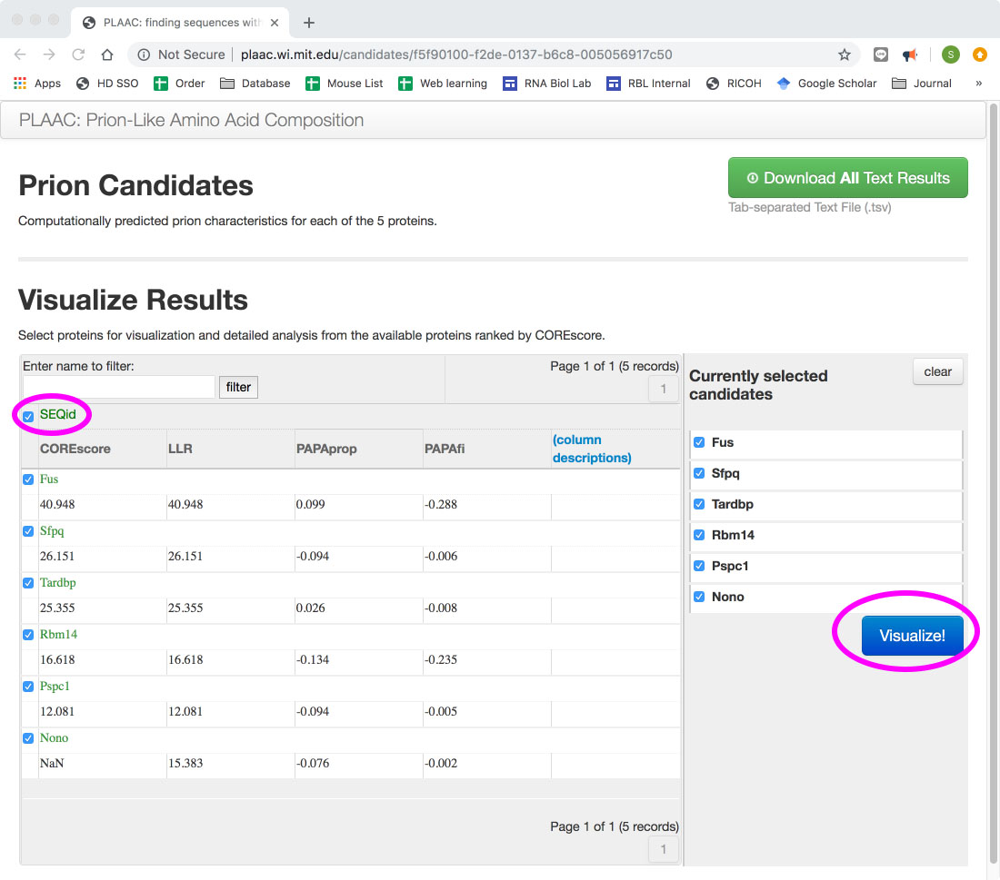
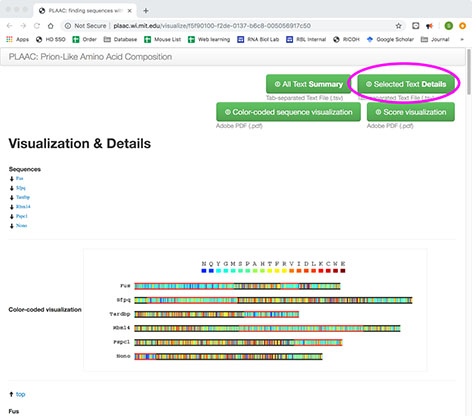

天然変性領域を予測してくれるIUPred2Aも、プリオン様ドメインを予測してくれるPLAACもmulti fasta形式のファイルを投げることができます。IUPred2Aの場合はchoose fileのボタンを押してファイルを選んでe-mailを入力すると、程なく添付ファイルで結果が帰ってきます。先日のparaspeckles_fasta.txtを投げれば、paraspeckles_fasta.resultというファイルが帰ってくるという具合です。下の方の添付ファイルのところの目立たないリンクにそっとおいてあります。
PLAACはちょっとややこしくて、choose fileのボタンからmulti fasta形式のファイルを投げるところまでは同じなのですが（タンパク質とタンパク質の間に改行があるとエラーが出るので注意）、下のような結果の画面が出てきます。

ここでSEQidのチェックボックスをクリックして、そこで出てくるVisualize!のボタンを押すと

こういう画面が出てくるので、右上のSelected Text Detailsのボタンを押すと、PLAAC_details.tsvのファイルがダウンロードされてきます。
次に、これらのファイルを統合してggplotが読み込めるようなフォーマットに変換します。頭のところを見てみると、、、
PLAACがこんな感じ
############################ parameters at run-time ####################################
## alpha=1.0; corelength=60; ww1=41; ww2=41; ww3=41; adjustprolines=true;
## fg_used: {X=0.00001;A=0.04865;C=0.00219;D=0.01638;E=0.00783;F=0.02537;G=0.07603;H=0.01810;I=0.02018;K=0.01641;L=0.02639;M=0.02975;N=0.25885;P=0.05126;Q=0.15178;R=0.02500;S=0.10988;T=0.03841;V=0.01972;W=0.00157;Y=0.05624;*=0.00001;}
## bg_scer: {X=0.00000;A=0.05499;C=0.01260;D=0.05859;E=0.06549;F=0.04410;G=0.04980;H=0.02170;I=0.06549;K=0.07349;L=0.09499;M=0.02070;N=0.06149;P=0.04380;Q=0.03960;R=0.04440;S=0.08989;T=0.05919;V=0.05559;W=0.01040;Y=0.03370;*=0.00000;}
## bg_input: {X=0.00000;A=0.08647;C=0.00607;D=0.03671;E=0.06705;F=0.03519;G=0.13926;H=0.01699;I=0.02124;K=0.04187;L=0.04854;M=0.03519;N=0.03489;P=0.08708;Q=0.07494;R=0.07737;S=0.07767;T=0.03853;V=0.03580;W=0.00394;Y=0.03519;*=0.00000;}
## bg_used: {X=0.00001;A=0.05499;C=0.01260;D=0.05859;E=0.06549;F=0.04409;G=0.04979;H=0.02170;I=0.06549;K=0.07349;L=0.09499;M=0.02070;N=0.06149;P=0.04379;Q=0.03960;R=0.04439;S=0.08989;T=0.05919;V=0.05559;W=0.01040;Y=0.03370;*=0.00001;}
## plaac_llr: {X=0.00000;A=-0.12257;C=-1.74969;D=-1.27456;E=-2.12398;F=-0.55278;G=0.42322;H=-0.18129;I=-1.17725;K=-1.49928;L=-1.28078;M=0.36281;N=1.43732;P=0.15739;Q=1.34371;R=-0.57425;S=0.20080;T=-0.43249;V=-1.03644;W=-1.89062;Y=0.51224;*=0.00000;}
## papa_lods: {X=0.00000;A=-0.39649;C=0.41516;D=-1.27700;E=-0.60502;F=0.83873;G=-0.03922;H=-0.27857;I=0.81370;K=-1.57675;L=-0.04001;M=0.67373;N=0.08030;P=-1.19745;Q=0.06917;R=-0.40586;S=0.13391;T=-0.11457;V=0.81370;W=0.66674;Y=0.77865;*=0.00000;}
#######################################################################################
ORDER SEQid AANUM AA VIT MAP CHARGE HYDRO FI PLAAC PAPA FIx2 PLAACx2 PAPAx2 HMM.background HMM.PrD-like
1 Fus 1 M 1 1 0.0476 0.3683 -0.17303175 0.3291 -0.07665774 NaN NaN NaN 0.0795 0.9205
1 Fus 2 A 1 1 0.0455 0.3722 -0.15981566 0.3334 -0.07495606 NaN NaN NaN 0.0666 0.9334
1 Fus 3 S 1 1 0.0435 0.3609 -0.18945652 0.3773 -0.06868978 NaN NaN NaN 0.0515 0.9485
1 Fus 4 N 1 1 0.0417 0.3648 -0.17665741 0.3792 -0.06746190 NaN NaN NaN 0.0390 0.9610
1
PLAACはちょいとややこしいことをしなければやらなかっただけあって、おまじないgrep -v '^#'だけでなんとかいけそうです。
一方、IUPred2Aはこんな感じ
# IUPred2A: context-dependent prediction of protein disorder as a function of redox state and protein binding
# Balint Meszaros, Gabor Erdos, Zsuzsanna Dosztanyi
# Nucleic Acids Research 2018, Submitted
>Rbm14
# POS AMINO ACID IUPRED SCORE ANCHOR SCORE
1 M 0.0780 0.1467
2 K 0.1229 0.1467
3 I 0.1731 0.1496
なんか手強そう。案の定、freadで取り込もうとすると、エラーが出ます。うーむどうしたら良いのだ。気まぐれに、paraspeckles_fasta.resultに.txtの拡張子をつけてエクセルで開いてタブ区切りテキストで保存し直したら読み込めました。なぜだ？？中身を見てみると、2行めと3行めのコメントがいつの間にか" "でくくられています。Excel、お前何をした。普段はお節介なことしかしないExcelではありますが、今回のお節介は、良い方に働いたようです。とりあえずファイルは取り込めるようなので、なぜこれでうまくいくのかは深く考えないことにして、以下のコマンドでファイルを読み込んで、先に進むことにします。Exelで開いたファイルは今回はparaspeckles_fasta.result.excel.txtの名前で保存したものを読み込んでいます（下の方の添付ファイルリンクに入れてあります）。
#read data
setwd("~/GoogleDrive/ncRNA_review")
library(data.table)
library(ggplot2)
library(dplyr)
PLAAC <- fread("grep -v '^#' plaac_details.tsv") #remove comment line upon import
IUPred2 <- fread("grep -v '^#' paraspeckles_fasta.result.excel.txt") #remove comment line upon import
これで一安心と思いきや、IUPred2Aのフォーマットはよくよく見ると全然ggplotに投げられないフォーマット。いろいろ問題があります。いつだったかネオタクソノミブログで、物理畑出身の木立さんが生物系のデータを扱う時に、解析をするまでにすんごい手間をかけてデータの整形をしなければならず、研究の本質と関係ないところに時間を食われる、どっちがメインかわからない、みたいなことを書いておられましたが、まさにこのことだったんですね。見てくれを良くするためにありとあらゆるセルが結合されたエクセル職人の労作を見てデーターサイエンティストが発狂するという気持ちもよくわかります。まずやらなければいけないのは、#で始まるコメント行が残っているみたいなので、それを除く。これは正規表現^#とgrepでなんとかなりそうです。次に、いらん改行がそれぞれのタンパク質の情報の後ろに入れられているようです。これもgrepで空の行を探して除いてやればなんとかなりそう。さらに、各タンパク質の情報はfastaみたいに>のあとにタンパク質名、という感じで入れられているのですが、この行を取り除いて、そのかわりにタンパク質名が入った新しい列を作ってそこに情報を格納しなくてはいけません。こいつは手ごわい。。。ついついexcelに手が伸びましたが、ここで日和ってはいけないということで、>から始まる行の情報をgrepでとってきてsymbol_lineに入れて、>の後にあるタンパク質の名前をsymbol_geneに入れて、このファイルに入っているタンパク質の数をsymbol_lineの要素の数をlengthで数えてsymbol_numに入れてやって、各タンパク質の配列の長さを>が入っていた行の情報を元に植木算式に計算するためにsymbol_lineの最後の要素にこのファイルの行数+1を足した数字を付け加えてやって（次のタンパク質の先頭の行数となる数字を入れただけ）、タンパク質名と長さを格納する列$geneと$lengthを作ってやって、forループを回してタンパク質名と長さを次々と書き込んでいって、最後にプロンプトから始まる行を全部除くというとてつもなくめんどくさい作業を書いてみましたが、何をやっているんだか自分でもよくわからなくなりましたが、多分もっとうまいやり方があるんでしょう。。。
#reformat IUPred2/
IUPred2 <- IUPred2[!grep('^#',IUPred2$V1),] #remove comment line
IUPred2 <- IUPred2[!IUPred2$V1 == "",] #remove blank lines
symbol_line <- grep('^>', IUPred2$V1) #grep lines start with >
symbol_gene <- sub(">", "", IUPred2$V1[grep('^>', IUPred2$V1)]) #prepare gene name
symbol_num <- length(symbol_line) #get the number of lines start with >
symbol_line[symbol_num + 1] <- length(IUPred2$V1) + 1 #put dummy number for the next symbol line
IUPred2$gene <- "" #create $gene
IUPred2$length <- "" #create $length
for (i in 1:symbol_num) {
IUPred2$gene[(symbol_line[i]+1):(symbol_line[i+1]-1)] <- symbol_gene[i] #put gene name
IUPred2$length[(symbol_line[i]+1):(symbol_line[i+1]-1)] <- (symbol_line[i+1]-1)-(symbol_line[i]+1)+1
}
IUPred2 <- IUPred2[!grep('^>', IUPred2$V1),]とりあえず結果オーライということで、この二つのデータを統合してやります。ここでまた問題が。紐付けするためには、それぞれの列に固有の共通IDがなければいけませんが、これがありません。というわけで、タンパク質の名前とアミノ酸の番号をつなげてやった名前を格納したIDという列をそれぞれのデータに作ってやってから、merge関数を使って統合します。ここで必要なのは、タンパク質の名前、アミノ酸番号、アミノ酸の種類、PLAACの値、IUPred2の値なので、それぞれ3, 4, 5, 17, 20列目にあるそれらの情報だけ取り出した新たなテーブルm2を作ってみます。ここで中身を確認してみると、mergeの時にアミノ酸の番号が入れ替わってしまっています。左の数字で紐付けしてるんですね。なので、1の次が10。というわけで、最後の2行で元のタンパク質のアミノ酸の並びに直しています。
#merge data
PLAAC$ID <- paste(PLAAC$SEQid, PLAAC$AANUM, sep = "_")
IUPred2$ID <- paste(IUPred2$gene, IUPred2$V1, sep = "_")
m1 <- merge(PLAAC, IUPred2)
m2 <- m1[,c(3, 4, 5, 17, 20)]
colnames(m2) <- c("protein", "AANUM", "AA", "PLAAC", "IUPred2")
m2 <- m2[order(m2$AANUM),]
m2 <- m2[order(m2$protein),]はあはあぜいぜい。やっとここまでたどり着いた。最後に、PLAACで予測されたvalue、もしくはIUPred2で予測されたvalueが0.5以上のものを、それぞれPrLDという列とIDRという列を新たに作って入れてやります。
#set threshold
m2$PrLD <- 0
m2$IDR <- 0
m2$PrLD[m2$PLAAC > 0.5] <- m2$PLAAC[m2$PLAAC > 0.5]
m2$IDR[m2$IUPred2 > 0.5] <- m2$IUPred2[m2$IUPred2 > 0.5]あとは、前回作ったドメインのデータと、PLAACとIUPred2のデータを一緒に書くだけ！!ドメインのデータを-0.55から-0.05までの負の値に、PLAACやIUPred2の値を0から1までの正の値にしてそれぞれのグラフを書いて、あとはfacetでえいやっと並べてるだけです。これができるのがggplotの便利なとこですね。
#read domain data
dt <- fread("grep -v '^#' paraspeckles_domain.txt", header = FALSE, fill = TRUE)
dt <- dt[, c(1, 4, 6, 20, 21)]
colnames(dt) <- c("domain_name", "query_name", "length", "query_from", "query_to")#draw domain structures
g <- ggplot()+
geom_segment(data = dt, aes(x = 0, xend = length, y = -0.3, yend = -0.3), color="gray", size = 1) +
geom_rect(data = dt, aes(xmin = query_from, xmax = query_to, ymin = -0.05, ymax = -0.55, fill = domain_name)) +
geom_area(data = m2, aes(x = AANUM, y = PrLD), fill = "red", alpha = 0.3) +
geom_line(data = m2, aes(x = AANUM, y = PrLD), color = "red", alpha = 0.1) +
geom_area(data = m2, aes(x = AANUM, y = IDR), fill = "blue", alpha = 0.3) +
geom_line(data = m2, aes(x = AANUM, y = IDR), color = "blue", alpha = 0.1) +
facet_grid(query_name~.) +
theme(strip.text.y = element_text(angle = 0)) +
#erase miscellaneous elements
xlab("") +
ylab("") +
theme(axis.text.y = element_blank()) +
theme(axis.text.x = element_blank()) +
theme(panel.grid.major = element_blank()) +
scale_y_continuous(breaks=NULL) +
scale_x_continuous(breaks=NULL, expand = c(0, 0))
g
ggsave(filename = "domain_PLAAC_IUPred2.png", g, width = 5, height = 3)ウェブサイトで表示させたデータをコピペすれば済む話ではあるんですが、数が増えてくれば、こっちの方がらくちんですし、何より楽しい！ちなみにこの図で見ると、Rbm14はPLAACが予測するプリオン様ドメインをどっかと持っていますが、IUPred2の予測値はその領域では必ずしも高いとは言えません。Nonoでは逆にプリオン様ドメインでないところでIUPred2の値が高いところがかなりあります。FusのN'は両方のスコアが高いところです。Rbm14のPrLD領域もFusのPrLD/IDR領域も共にin vitroではハイドロゲル化しますが、性質には若干の違いが見られることが廣瀬さんとArcha Foxさんたちの論文で明らかになってます。こういったところを細かく見ていくと、いろいろなことがわかりそうです。

 2020
2020